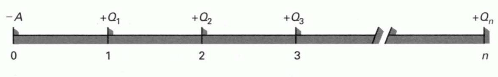
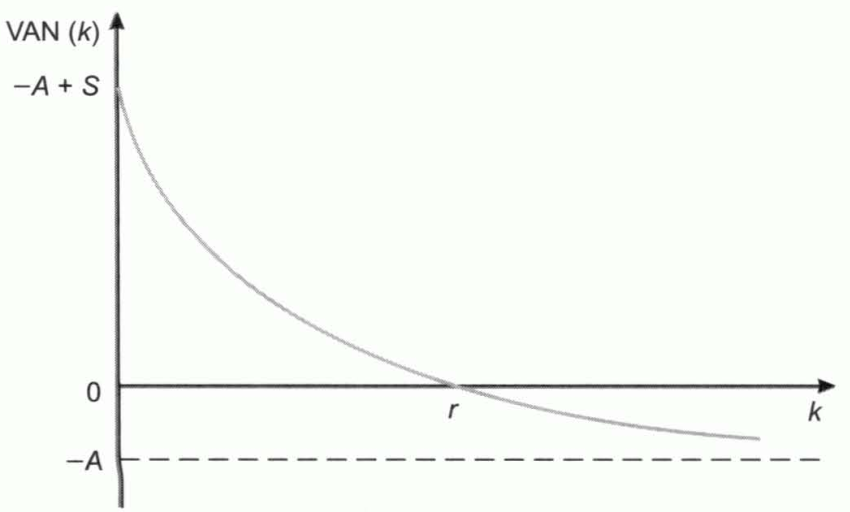
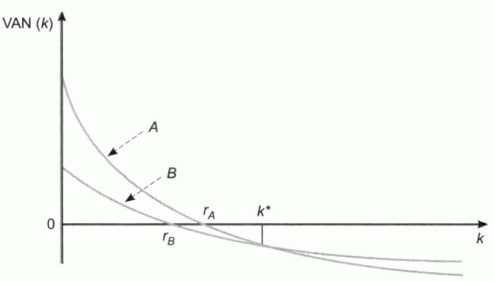
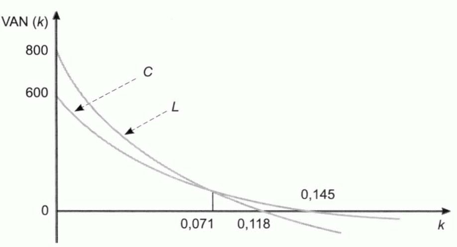

Tema 7: Las inversiones y su selección. La rentabilidad de las inversiones
Concepto y tipos de inversiones
Las inversiones se pueden clasificar considerando distintos criterios, entre los que se encuentran:
-
Inversiones de activo fijo y de activo circulante. Las empresas se plantean las decisiones de selección de activos fijos, considerando a las inversiones en activo circulante anexas.
-
Inversiones financieras y productivas. Las inversiones financieras se materializan en activos de carácter financiero, como las obligaciones, las acciones, los pagarés, etc., y las inversiones productivas, son las que se concretan en activos que sirven para producir bienes y consumos.
-
Inversiones productivas: se distinguen estos tipos de inversiones:
-
Inversiones de reemplazamiento para el mantenimiento. Son las necesarias para sustituir los bienes de equipo desgastados o estropeados que son precisos para continuar la producción.
-
Inversiones de reemplazamiento para reducir costes o para mejorar tecnológicamente. Se sustituyen equipos que funcionan, pero que se encuentran obsoletos, por otros con consumos inferiores o que incorporan mejoras tecnológicas.
-
Inversiones de ampliación de los productos o mercados existentes. Se realizan para elevar la producción de los productos existentes o para ampliar los canales y las posibilidades de distribución en los mercados a los que ya sirve la empresa.
-
Inversiones de ampliación a nuevos productos o mercados. Son las efectuadas para elaborar nuevos productos o para extenderse a nuevas áreas geográficas o, en general, a nuevos mercados.
-
Inversiones impuestas. No se efectúan por motivos económicos sino para cumplir leyes, convenios colectivos, etc.
-
Las inversiones de mantenimiento suelen ser las que requieren menos análisis y en las que el proceso decisional es más sencillo. Además, dentro de cada grupo, los trámites necesarios suelen ser tanto más prolongados y complejos cuanto mayor es el importe que requiere la inversión.
Variables fundamentales que definen un plan de inversión
Desde el punto de vista económico, lo único relevante es el desembolso inicial que requiere la inversión, los flujos de caja que cabe esperar de la misma, los momentos en que se espera que sean generados cada uno de ellos, y el riesgo que comporta.
El plan de una inversión se puede representar como en la siguiente figura:
{width="6.804364610673666in" height="0.7302537182852143in"}
Figura . Plan de una inversión
Donde \(A\) es el desembolso inicial, \(Q_{t}\) es el flujo de caja del momento \(t\) y \(n\) es el número de años que dura la inversión.
También se puede representar del siguiente modo:
El factor de riesgo se incorpora al cálculo de la rentabilidad.
Flujo de caja o flujo neto de caja: diferencia entre el cobro generado por la inversión en ese momento y los pagos que esa inversión requiere en ese instante del tiempo.
Las decisiones de selección de inversiones deben basarse en los flujos de cajas, que son diferencias entre cobros y pagos, y no en los beneficios, que son diferencias entre ingresos y gastos.
Rentabilidad o rentabilidad esperada: rentabilidad que se espera obtener con la inversión.
Rentabilidad requerida, \(\mathbf{k}_{\mathbf{h}}\): rentabilidad exigida a la inversión.
Una inversión no es realizable a menos que su rentabilidad esperada supere a su rentabilidad requerida.
Tipo libre de riesgo, \(R_{f}\): rentabilidad que tienen los activos que carecen de riesgo.
Prima de riesgo, \(p_{h}\): suplemento de rentabilidad que se incorpora a la inversión debido al riesgo que comporta. Se calcula teniendo en cuenta el tipo libre de riesgo, \(R_{f}\), y la rentabilidad requerida de cierta inversión, \(k_{h}\).
Rentabilidad neta de riesgo: diferencia entre su rentabilidad y su prima de riesgo requerida.
La relación existente entre la rentabilidad que se exige a una inversión cuando no hay inflación, \(i\), y la que se exige cuando la hay, \(k\), es la siguiente:
Donde \(g\) es la tasa de inflación anual.
La rentabilidad requerida debe ser superior al coste de la financiación.
Si se debe elegir entre dos inversiones mutuamente excluyentes que tienen el mismo nivel de riesgo, la rentabilidad mínima que ha de requerirse de cada una de ellas es la rentabilidad esperada de la otra.
Métodos estáticos de selección de inversiones
Métodos estáticos o criterios aproximados: son métodos de selección de inversiones que no tienen en cuenta el hecho de que los capitales tienen distintos valores en los diferentes momentos del tiempo. El más utilizado es el plazo de recuperación.
Plazo de recuperación, \(P\): es el período de tiempo que tarda en recuperarse el desembolso inicial con los flujos de caja. Da preferencia a aquellas inversiones cuyo plazo de recuperación sea menor. Se trata de un criterio de liquidez.
Si los flujos de caja son constantes e iguales a \(Q\), y la duración de la inversión es igual o superior que el propio plazo de recuperación, denominando \(A\) al desembolso inicial, \(P\) será:
Los inconvenientes de este criterio son:
-
Así, en cuanto a los flujos de caja anteriores al plazo de recuperación, no tiene en cuenta los momentos en los que se generan.
-
En cuanto a los flujos de caja posteriores al propio plazo de recuperación, este criterio no los tiene en cuenta.
-
Se suman unidades monetarias de los diversos años, como si fueran homogéneas, y el total se compara con el desembolso inicial, que se encuentra referido a otro momento del tiempo.
Otros métodos estáticos muy empleados en la práctica son:
-
El criterio del flujo total por unidad monetaria comprometida.
-
El criterio del flujo de caja medio anual por unidad monetaria comprometida.
-
El criterio de la comparación de costes.
-
La tasa de rendimiento contable.
El flujo de caja total por unidad monetaria comprometida es:
La regla es realizar la inversión cuando este importe es superior a la unidad, considerarla indiferente cuando es igual a uno y no efectuarla si resulta inferior a la unidad. Según este criterio, una inversión es tanto mejor cuanto mayor sea este importe.
Los inconvenientes de este criterio son:
-
Se suman unidades monetarias de los diversos años, como si fueran homogéneas, y el total se compara con el desembolso inicial que, también está referido a otro momento.
-
Se refiere al conjunto de la vida de la inversión, lo que impide comparar inversiones que tienen diferente duración.
-
No se trata de una verdadera rentabilidad.
El criterio del flujo de caja medio anual por unidad monetaria comprometida consiste en calcular el flujo neto de caja medio anual, \(\overline{Q}\), y determinar cuánto corresponde por cada unidad monetaria invertida:
El coeficiente \(r''\) es lo que, por término medio, genera la inversión anualmente por cada unidad monetaria invertida, y una inversión se considera tanto mejor cuanto mayor sea \(r''\).
Este método tiene los mismos inconvenientes que el anterior, excepto el penúltimo, pues \(r''\) tiene una referencia anual. Sin embargo, tampoco es aplicable para comparar inversiones que tienen diferentes duraciones, pues tiende a dar preferencia a las más breves.
El método de la comparación de costes consiste en calcular los costes anuales que corresponden a las diversas alternativas de inversión y elegir la que tenga el menor coste anual total. Es un criterio técnico que aporta una información importante, pero tiene inconvenientes importantes. No constituye un procedimiento de valoración de inversiones ni permite calcular su rentabilidad. Además, ni siquiera utiliza la información económica relevante.
Los mismos inconvenientes tiene la tasa de rendimiento contable o rentabilidad media, que relaciona mediante cociente el beneficio anual que se espera que genera el proyecto, con la inmovilización media que requiere en activo fijo y circulante.
Métodos dinámicos de selección de inversiones
Métodos dinámicos de selección de inversiones: son aquellos que incorporan el factor tiempo y tienen en cuenta el hecho de que los capitales tiene distinto valor en función del momento en el que se generan. Los principales métodos dinámicos de selección son el valor actual neto, \(\text{VAN}\), la tasa interna de rentabilidad, \(\text{TIR}\), y el plazo de recuperación con descuento.
Valor actual, \(\text{VA}\): es la suma de los flujos de caja llevados al momento actual, considerando una rentabilidad anual, \(k\).
La inversión será efectuable cuando el valor actual del proyecto es mayor que lo que hay que desembolsar por él, \(A\); será indiferente cuando su \(\text{VA}\) coincida con el desembolso inicial, y no será efectuable cuando el valor actual de sus flujos de caja sea inferior al desembolso inicial.
Valor actual neto, \(\text{VAN}\): diferencia entre su valor actual y su desembolso inicial.
Entre un conjunto de inversiones efectuables debe darse preferencia a aquellas cuyo valor actual neto sea más elevado.
Inversiones analizables: inversiones en las que la suma aritmética de los flujos de caja supera al desembolso inicial.
Inversiones simples: aquellas que se encuentran formadas por un desembolso inicial y un conjunto posterior de flujos de caja que son todos no negativos.
El valor actual neto, como función del tipo de descuento, responderá a la expresión:
En las inversiones simples que, además, son analizables, el VAN evoluciona, como función del tipo de descuento, de la siguiente manera:
{width="3.6507688101487314in" height="2.1990518372703414in"}
Figura . Evolución del VAN como función del tipo de descuento
Cuando el tipo de descuento vale cero, el VAN es:
A medida que la rentabilidad requerida crece, el \(VAN(k)\) ha de irse reduciendo, pues, por ser una inversión simple, los flujos de caja posteriores al momento \(0\) son todos positivos y, cuando \(k\) tiende a infinito, el valor actual neto tiende a \(- A\), por lo que presenta una asíntota en esa altura. Además, la curva es convexa respecto al eje de abscisas.
Por consiguiente, en estas inversiones, dado que, al aumentar el tipo de descuento el \(\text{VAN}\left( k \right)\) se reduce continuamente, pasando de valores positivos a negativos, existirá un único valor de \(k\) que haga el \(VAN(k)\) igual a cero.
Tipo de rendimiento interno, tasa interna de rentabilidad o tasa de retorno, \(\text{TIR}\): tipo de descuento, \(r\), que hace el valor actual neto de una inversión igual a cero. Es el valor de \(r\) tal que:
Con arreglo a este criterio, una inversión será efectuable cuando su rentabilidad, \(r\), sea superior a la rentabilidad requerida de la misma, \(k\); no lo será cuando aquella sea inferior y será indiferente cuando ambas rentabilidades coincidan.
Si se ha de seleccionar entre un conjunto de inversiones efectuables, deberá darse preferencia a las que tengan mayor rentabilidad neta de riesgo.
Si no hubiera inflación, la rentabilidad así obtenida sería, además, la rentabilidad real de la inversión. Pero si las expectativas son que los próximos años va a haber una inflación anual, \(g\), la \(\text{TIR}\) sería la rentabilidad aparente, \(r_{A}\), y para calcular la rentabilidad real se debe utilizar la siguiente expresión:
Las comparaciones entre las rentabilidades de las inversiones pueden plantearse bien en términos de rentabilidades aparentes o bien en términos de rentabilidades reales. Por ejemplo, una inversión es efectuable cuando su rentabilidad aparente, \(r_{A}\), es superior a la rentabilidad aparente que se le exige, \(k\), o, equivalentemente, cuando su rentabilidad real, \(r_{R}\), supera a la tasa de inflación que se requiere, \(i\). Ambos criterios son equivalentes pues, evidentemente, si \(r_{A}\) es superior que \(k\), la tasa real será superior a la rentabilidad real requerida:
Método de prueba y error: permite calcular la \(\text{TIR}\) cuando la inversión dura más de dos años. Consiste en ir probando distintos tipos de descuento hasta encontrar aquel que hace el valor actual neto igual a cero. Si con un tipo de descuento se obtiene un valor mayor que cero, habrá de probarse con otro más elevado. Si el valor obtenido es negativo, habrá de probarse con otro más pequeño. Existen dos fórmulas que permite acotar el valor de \(r\), para las que es necesario definir:
- Importe de multiplicación, \(M\):
- Importe de división, \(D\):
Siendo \(S\) la suma aritmética de los flujos de caja y \(A\) el desembolso inicial de la inversión, las fórmulas aproximadas son:
La tasa \(r^{*}\) proporciona una aproximación por defecto, en tanto que la tasa \(r^{**}\) aproxima por exceso, es decir:
Si se trata de determinar si una inversión es efectuable y \(r^{*}\) resulta superior que la rentabilidad requerida, \(r\) será mayor todavía, y podría concluirse que la inversión es efectuable, sin necesidad de efectuar más cálculos ni acudir al método de prueba y error. De forma semejante, si resulta que \(r^{**}\) es inferior que la rentabilidad requerida, podrá concluirse que la inversión no es efectuable.
Plazo de recuperación o pay-back con descuento: período de tiempo que tarda en recuperarse, en términos actuales, el desembolso inicial. Según este método, las inversiones son tanto mejores cuanto menor sea su plazo de recuperación con descuento. Es un criterio que prima la liquidez de las inversiones sobre su rentabilidad y que no tiene en cuenta los flujos generados con posterioridad al propio plazo de recuperación.
Tasa de valor actual, \(T\): es el valor actual neto que se obtiene con la inversión por cada unidad monetaria comprometida.
Una inversión será efectuable cuando su tasa sea positiva, será indiferente cuando la tasa valga cero y no será efectuable cuando \(T\) sea negativa. Entre las inversiones efectuables, este criterio da preferencia a aquellas cuya tasa de valor actual sea más elevada.
Tiene interés en inversiones fraccionable, es decir, en aquellas en las que se puede adquirir una participación. Quien piensa en invertir \(\text{N\ u.m.}\) en proyecto, puede calcular el valor actual neto de su participación mediante el producto entre \(T\) y \(N\).
Índice de rentabilidad o coeficiente beneficio/coste: es el cociente entre el valor actual neto de todos los cobros generados por el proyecto y el valor actual neto de todos los pagos que requiere, incluyendo entre éstos últimos el desembolso inicial.
Una inversión, según este criterio, será efectuable sólo cuando el índice sea superior a la unidad. Entre un conjunto de inversiones efectuables, debe darse preferencia a aquellas cuyo índice sea más elevado.
El índice de rentabilidad conduce a las mismas decisiones de selección de inversiones que el \(\text{VAN}\).
El VAN y la TIR en algunos casos especiales
Un modelo general de valoración de inversiones y cálculo de rentabilidades
En algunas inversiones puede ser útil suponer que los flujos se generan a mediados de año, o incluso realizar previsiones trimestrales o mensuales. El modelo que, partiendo de flujos generados en cualesquiera momentos, permite determinar el valor actual neto y la rentabilidad anual, utilizando como tipo de descuento la rentabilidad requerida anualmente, es el siguiente:
En estas expresiones, \(Q_{1}\) es el próximo flujo de caja generado por la inversión, y \(t_{1}\) el momento en el que se producirá, expresado en años contados desde la actualidad; \(Q_{2}\) es el siguiente flujo, y \(t_{2}\) el momento en el que se generará, expresado también en años desde el momento actual, etc.
El supuesto en el que los flujos de caja son constantes
A veces se supone que los flujos son constantes dado que resulta imposible o excesivamente caro prever los flujos que generará el proyecto en cada uno de los períodos. Denominando \(Q\) al flujo constante, el valor actual neto es:
El importe que se encuentra entre corchetes es el valor actual de una corriente de flujos de caja unitarios, que tiene duración de \(n\) años. Se le designa como \(a_{\left. \ n \right\rceil k}\).
Aplicando las propiedades de las progresiones, el valor actual neto es igual a:
Y la \(\text{TIR}\) es:
El supuesto en el que los flujos de caja son constantes y la duración de la inversión tiende a infinito
Si la duración de la inversión es tan elevada que, sin apenas pérdida de precisión, pues se trabaja con magnitudes que normalmente son inciertas, puede considerarse que tiende a infinito. Si, además, se supone que los flujos de caja son constantes, el \(\text{VAN}\) de la inversión será:
En cuanto a la \(\text{TIR}\):
El supuesto en el que los flujos de caja crecen a una tasa constante
Se supone que los flujos de caja crecen a una tasa \(f\), expresada en tanto por uno. Por tanto, el \(\text{VAN}\) de la inversión será:
Aplicando las propiedades de las progresiones geométricas resulta:
Y la tasa de rentabilidad interna es el valor de \(r\) que cumple:
El supuesto en el que los flujos de caja crecen a una tasa constante y además la duración de la inversión tiende a infinito
Si al supuesto del apartado anterior se añade el de que la duración de la inversión tiende a infinito, el \(\text{VAN}\) será:
Y la \(\text{TIR}\):
Cuando la duración de la inversión tiende a infinito y todos los flujos se mantienen al nivel del primero, la rentabilidad de la inversión es igual al cociente entre el flujo constante y el desembolso inicial. Es decir, el aumento de rentabilidad que provoca el crecimiento de los flujos es precisamente igual a la tasa de crecimiento de los flujos.
Relaciones entre el VAN y la TIR
Los métodos VAN y TIR en las decisiones de aceptación o rechazo de proyectos independientes
Cuando el tipo de descuento es mayor que \(r\), el \(\text{VAN}\) es negativo y, por consiguiente, la inversión no es efectuable con arreglo a este criterio. Según el tipo de rendimiento interno, tampoco será efectuable la inversión en ese caso, pues la rentabilidad requerida, \(k\), es superior a la rentabilidad esperada del proyecto, \(r\).
Si la rentabilidad requerida es inferior que la rentabilidad de la inversión, el proyecto es efectuable según el criterio de la \(\text{TIR}\) y también lo es según el \(\text{VAN}\).
Cuando la rentabilidad esperada de la inversión coincide con la que se le requiere, su valor actual neto es igual a cero y el proyecto es indiferente tanto si se utiliza este criterio como si se utiliza la \(\text{TIR}\).
Por tanto, en la determinación de la efectuabilidad o rechazo de una inversión simple, el \(\text{VAN}\) y la \(\text{TIR}\) siempre conducen a la misma decisión.
Los métodos VAN y TIR en las decisiones de aceptación o rechazo de proyectos mutuamente excluyentes que tienen el mismo nivel de riesgo
- Caso en el que no existe discrepancia entre los dos criterios aunque se utilice un único tipo de descuento.
Sean dos proyectos que tienen el mismo nivel de riesgo y para cuya valoración se aplica el mismo tipo de descuento, es decir, se les exige la misma rentabilidad.
{width="3.876777121609799in" height="2.2112674978127735in"}
Figura . \(\mathbf{\text{VAN}}\) de dos proyectos de inversión como función del tipo de descuento
Si los dos proyectos fueran independientes entre sí y sus rentabilidades fueran mayores que la requerida, se deberían efectuar los dos. Pero se supone que estas inversiones son mutuamente excluyentes y que, por tanto, hay que elegir una de ellas:
-
Siguiendo el criterio de la \(\text{TIR}\), es preferible la inversión cuya rentabilidad sea mayor, en la figura anterior sería la inversión \(A\).
-
Según el criterio del \(\text{VAN}\), en el ejemplo también es preferible la inversión \(A\), pues su \(\text{VAN}\) es superior para cualquier tipo de descuento inferior a \(k^{*}\), para tipos superiores a \(k^{*}\), ninguna de las inversiones es efectuable y, por tanto, no tiene interés estudiar cuál es menos mala. La tasa \(k^{*}\) es el tipo de descuento para el cual son idénticos los \(\text{VAN}\) de ambas inversiones.
La intersección de ambas curvas se denomina intersección de Fischer. Aunque se utilice la misma tasa para valorar las distintas inversiones, es condición suficiente para que los dos criterios conduzcan a la misma decisión que no exista ninguna intersección de Fischer en el primer cuadrante.
- Caso de posible discrepancia entre los dos criterios cuando se utiliza un único tipo de descuento.
Pueden aparecer discrepancias entre los dos criterios si existe alguna intersección de Fischer en el primer cuadrante.
{width="4.15165791776028in" height="2.243160542432196in"}
Figura . \(\mathbf{\text{VAN}}\) de dos proyectos de inversión como función del tipo de descuento
- La resolución de la discrepancia.
Ante un conjunto de proyectos de inversión mutuamente excluyentes, el problema no es tanto determinar cuál es preferible sino de averiguar cuál es efectuable; y solo uno de ellos lo es.
Si todos los proyectos tienen el mismo nivel de riesgo, sólo es efectuable aquel cuya rentabilidad es mayor o, lo que es lo mismo, aquel cuyo \(\text{VAN}\) es positivo cuando se utiliza el tipo de descuento adecuado, y éste no tiene que ser, necesariamente, el mismo para las distintas inversiones.
La rentabilidad requerida y la diferencia de riesgo entre las inversiones mutuamente excluyente
Si entre dos inversiones alternativas existe distinto nivel de riesgo, deberá darse preferencia a aquella cuya rentabilidad neta de riesgo sea más elevada.
En consecuencia, una inversión ha de rentar, al menos, el mayor de los siguientes valores:
-
El resultado de añadir, al tipo puro, la prima de inflación y la prima de riesgo.
-
El coste de la financiación, también denominado coste del capital.
-
La rentabilidad esperada de otra inversión alternativa que tenga su mismo nivel de riesgo.
Denominando \(p\) a la prima de riesgo requerida del proyecto, \(R_{f}\) al tipo libre de riesgo, \(k_{i}\) al coste de la financiación, \(r'\) a la rentabilidad del proyecto alternativo y \(p'\) a la prima de riesgo requerida de este último, las tres condiciones se expresan del siguiente modo:
Puesto que la rentabilidad ha de ser la mayor de las tres condiciones y superior a la rentabilidad requerida:
La relación entre el plazo de recuperación simple y los criterios \(\mathbf{\text{VAN}}\) y \(\mathbf{\text{TIR}}\) cuando los flujos de caja son constantes y la duración de la inversión es ilimitada
Cuando los flujos de caja son constantes y la duración de la inversión es mayor que el propio plazo de recuperación simple, éste es igual al cociente entre el desembolso inicial y el flujo de caja constante:
Por consiguiente:
Por otra parte, cuando el flujo de caja es constante y la inversión dura indefinidamente:
Si la duración de la inversión tiende a infinito y el desembolso inicial se recupera en algún momento, tal duración será superior que su plazo de recuperación y, en tal caso, siendo el flujo de caja constante:
Y también:
Se deduce que, aunque el plazo de recuperación tiene todos los inconvenientes apuntados, en este caso particular, al darse mayor preferencia a las inversiones que se recuperan antes, se está prefiriendo aquellas que tienen una mayor rentabilidad y cuyo \(\text{VAN}\) es más elevado.
Sin embargo, el criterio del plazo de recuperación puede conducir al rechazo de inversiones cuyo \(\text{VAN}\) es positivo y cuya rentabilidad es superior a la requerida.
El problema de las inversiones mixtas
Inversiones no simples: están formadas por las inversiones puras y las inversiones mixtas.
-
Inversiones puras: solo tienen una solución real para la ecuación de la \(\text{TIR}\).
-
Inversiones mixtas: puede suceder que la curva no corte en ningún punto al eje de abscisas, o que le corte en varios puntos. Puesto que el problema afecta al criterio de la \(\text{TIR}\), pude aplicarse el criterio del \(\text{VAN}\). No obstante, si se trata de analizar un proyecto mixto, \(A\), que se ha de comparar con otro, \(B\), que también lo es, el problema vuelve a surgir. Su solución más extendida es actualizar los flujos de caja negativos al momento \(0\) e incluir su \(\text{VAN}\) en el desembolso inicial de la inversión, calculándose luego la \(\text{TIR}\) de la forma habitual. Como tipo de descuento para actualizar los flujos de caja negativos ha de aplicarse el coste de la financiación, \(k_{i}\), o el resultado de añadir al tipo libre de riesgo, \(R_{f}\), la prima de riesgo que se considere adecuada; debiendo elegirse el mayor de los dos.